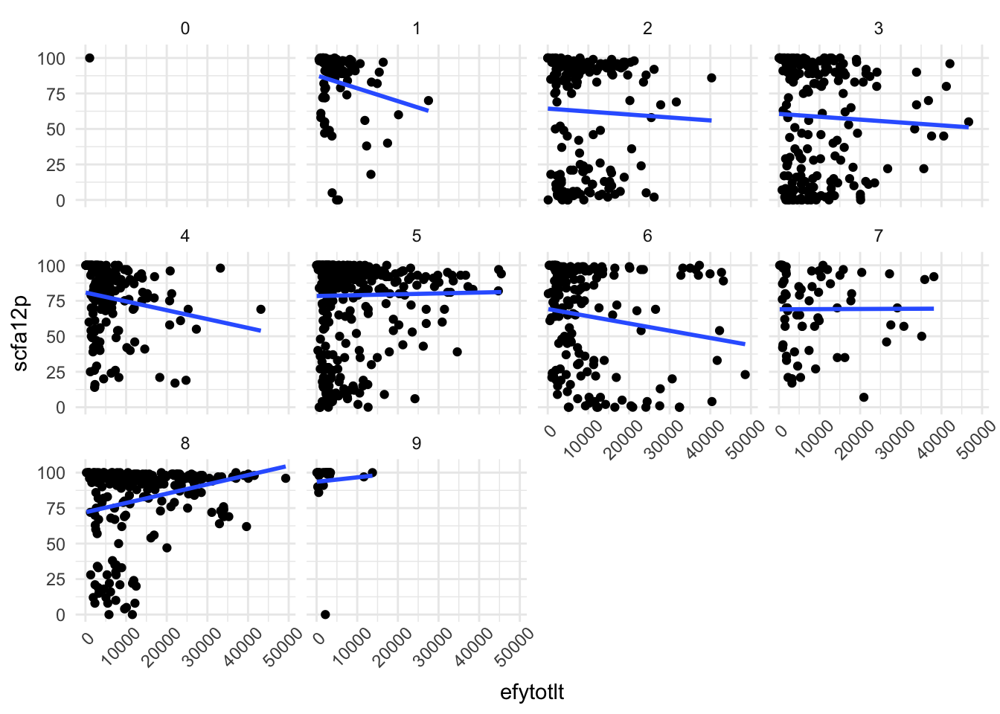
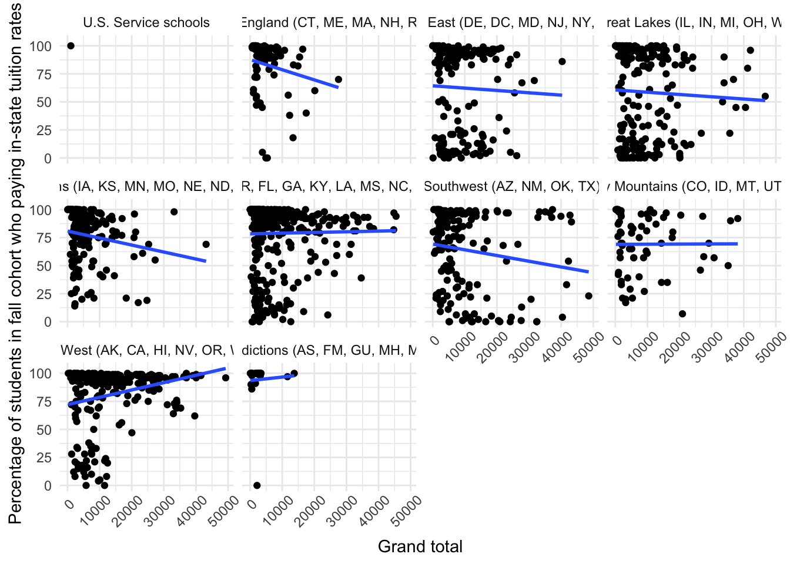
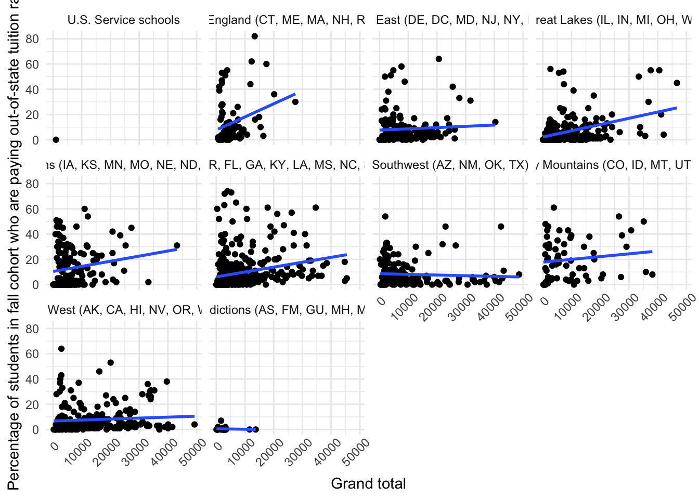

selected_files <- c(
"HD2021",
"EFFY2022",
"SFA2122"
)IPEDtaS Tutorial
- This page will walk you the basics of how to use
IPEDtaSto automagically retrieve labelled IPEDS.dtafiles - NCES provide all the information needed to create labelled IPEDS data
- For Stata users, there is a reasonable amount of cleaning work to make the scripts run
- For R users, there is no direct way of getting labelled IPEDS data
- These scripts automate the process so you simply have
- Select the files you need
- Hit “run” or “do”
- The R and Stata scripts are essentially the same the in terms of what they do
- The instructions are mostly the same, but a few details are specific to each language
- Where things differ, you will see it separated into tabs below
System Requirements
First things first, let’s consider the what you will need on your computer to get started
- An up-to-date version of
R
- If you’re not sure how up-to-date your R is, download a new version of R from https://cran.r-project.org
- An up-to-date
tidyversepackage
- In your R console type
install.packages("tidyverse")to get the latest version
- Up to 11.58gb of space (if you want to store the whole of IPEDS, most of you won’t)
- An up-to-date installation of Python
- Don’t fret, you don’t have to use Python, but the .do file uses PyStata to clean up the scripts, so Python just needs to be on your machine
- You can see if you already have Python by typing
python searchinto your Stata command box - You can install a copy of Python from https://www.python.org/downloads/
- An up-to-date and licensed copy of Stata version 16.0 or higher (BE or Basic is sufficient)
- You can upgrade/purchase/download Stata from https://www.stata.com
- Up to 4.01gb of space (if you want to store the whole of IPEDS, most of you won’t)
Setting up Your Project Folder
This part is identical for both Stata and R users, the main points to note are:
- Wherever you place the
IPEDtaS.doorIPEDtaS.Rfile will be treated as “home” or the “working directory” a.k.a..
- When the script runs it will store output in
./dataand./dictionaries - Caution: Anything you have in folders with that name will be overwritten
- This also applies to
./zip-data,./zip-do-files,./zip-dictionaries,./unzip-data,./unzip-do-files,./unzip-dictionarieswhich are folders used temporarily behind-the-scenes
- Personally, I set up my projects with scripts in the top-level of the project folder (as in, not in a sub-folder), so that is how
IPEDtaSwas designed
- If you need everything in a sub-folder for sanity reasons either:
- Place
IPEDtaSin your data folder (e.g./data/IPEDtaS.do) which will place the data in./data/data/hd2022.dta - Place
IPEDtaSin your scripts folder and go through adjusting all the relative paths by adding../to back out one level
File Selection
The only real change you have to make in the whole process is to the scripts is selecting which files you want to download
- By default the scripts will download every single file in IPEDS
- This might be something you want to do once, however, probably not every time you use them
- The basic premise is the same: comment out or delete the file names you don’t want
- In the tabs below, I will outline how the most efficient way of doing this in each language
- Note: While the script has all files listed in chronological order and then by the order they appear at https://nces.ed.gov/ipeds/datacenter/DataFiles.aspx, this is arbritrary
- You could list files in any order you like, it’s just the order they will be downloaded in
- The only rule is that the
selected_files <- c()must be a valid list of IPEDS file names - Each line/entry must end in a comma
,except the final one - In R, there is no code for a multi-line comment, you need a
#at the start of each line to comment it out - If you’re using RStudio to run R, you can comment out multiple lines at once by
- Highlight the file names you want to comment or un-comment
- Use the keyboard shortcut
- Mac: Commmand + Shift + C
- Windows: Control + Shift + C
Here are some short examples of file selection
- You can delete all the files you don’t want and leave a simple list
- This is probably the easiest if you’re only downloading a small number of files
- You can comment out files you don’t want from list already in the file
selected_files <- c(
"HD2021",
# "IC2022",
# "IC2022_AY",
"EFFY2022",
# "EFFY2022_DIST",
"SFA2122"
)That’s about it, when you run the script, the files you put in selected_files will be downloaded
- For the Stata version
local selected_filesneeds to be a valid list, there are a few more rules than in R - Each line in the list must end in
///except the final one - Stata has both single-line comments
//or*and multi-line commments which start/*and end*/ - Multi-line comments make it easier to comment out large blocks like we want to do here
- To work in the list, the line before a multi-line comment must be
///and nothing else - Below this start the first line of a multi-line comment with
/* - If you don’t want anything below that line, just leave it, there is a
*/at the end of the list anyway - To close out a multi-line commment somewhere else use
*/ - You can also just comment out lines you don’t want with
//or*at the start of each line or just delete any file names you don’t want
Here are some short examples of file selection
- You can delete all the files you don’t want and leave a simple list
- This is probably the easiest if you’re only downloading a small number of files
local selected_files ///
"HD2021" ///
"EFFY2022" ///
"SFA2122"- You can comment out files you don’t want from list already in the file using single-line comments
local selected_files ///
"HD2021" ///
// "IC2022" ///
// "IC2022_AY" ///
"EFFY2022" ///
// "EFFY2022_DIST" ///
"SFA2122"Which is the same as
local selected_files ///
"HD2021" ///
* "IC2022" ///
* "IC2022_AY" ///
"EFFY2022" ///
* "EFFY2022_DIST" ///
"SFA2122"- Use multi-line comments to comment out files you don’t want
local selected_files ///
"HD2021" ///
///
/*
"IC2022" ///
"IC2022_AY" ///
*/
"EFFY2022" ///
///
/*
"EFFY2022_DIST" ///
*/
"SFA2122"That’s about it, when you run the script, the files you put in local selected_files will be downloaded
Runnning the Script
Once you have the file selection set, simply save the script and hit run/do!
If you’re using this tool as part of a reproducible research project, you might want to include running it as part of your analysis code
- However, you don’t want to run it every time you run your code, only if the data isn’t already downloaded
- The below code blocks will do exactly that if you include them at the start of your analysis code
- Just change
hd2021.dtato a file you download
if(!file.exists("data/hd2021.dta")) { source("IPEDtaS.R") }if(!fileexists("data/hd2021.dta")) { do "IPEDtaS.do" }Working with Labeled IPEDS Data
Okay, now we have our labelled IPEDS data, let’s walk through a simple descriptive analysis using
- HD2021 (institutional characteristics as of Fall 2021)
- EFFY2022 (enrollment for 2021-2022 school year)
- SFA2022 (financial aid for 2021-2022 school year)
- Start a new project folder, download a copy of
IPEDtaS.R, and place it in the folder - Adjust
selected_files <- c()to download the 3 files we want
selected_files <- c(
"HD2021",
"EFFY2022",
"SFA2122"
)- Hit “Run”
- Load tidyverse and haven (part of tidyverse, but requires loading separately)
library(tidyverse)
library(haven)- Read our data in
data_info <- read_dta("data/hd2021.dta")
data_enroll <- read_dta("data/effy2022.dta")
data_aid <- read_dta("data/sfa2122.dta")Okay, now, take a look at the data_info we just read in
- Do you see the descriptions under each variable name?
- If you’re familiar with IPEDS, you won’t be used to seeing those
- They’re the variable labels we added, super useful for quick questions without having to open the code book!
- Hmm, data_enroll is much “longer” than our other 2 data frames, we means we probably have a little light data-wrangling to do
- I have a hunch that the data might be “long” by the variable EFFYLEV, so, let’s look at how many observations we have for each value of that
data_enroll |>
count(effylev)# A tibble: 4 × 2
effylev n
<dbl+lbl> <int>
1 -2 [Not applicable, undergraduate detail] 103690
2 1 [All students total] 6036
3 2 [Undergraduate] 5758
4 4 [Graduate] 2059Once again, note how get labels in addition to the effylev values!
- This is the best of both worlds,
- We still have the original values to check with the codebook (which you don’t get with some tools we will discuss later)
- The labels help us quickly identify that we want to just keep
effylev == 2for undergraduate students
data_enroll <- data_enroll |>
filter(effylev == 2)- Now we want to join our data together
data <- left_join(data_info, data_enroll, by = "unitid") |>
left_join(data_aid, by = "unitid")- Now let’s start exploring some basic trends to illustrate how labels can help
- How does the percent paying in-state tuition vary by region?
data |>
group_by(obereg) |>
summarize(median_in_state = median(scfa12p, na.rm = TRUE))# A tibble: 10 × 2
obereg median_in_state
<dbl+lbl> <dbl>
1 0 [U.S. Service schools] 100
2 1 [New England (CT, ME, MA, NH, RI, VT)] 91
3 2 [Mid East (DE, DC, MD, NJ, NY, PA)] 85
4 3 [Great Lakes (IL, IN, MI, OH, WI)] 76
5 4 [Plains (IA, KS, MN, MO, NE, ND, SD)] 83
6 5 [Southeast (AL, AR, FL, GA, KY, LA, MS, NC, SC, TN, VA, WV… 93
7 6 [Southwest (AZ, NM, OK, TX)] 74.5
8 7 [Rocky Mountains (CO, ID, MT, UT, WY)] 75
9 8 [Far West (AK, CA, HI, NV, OR, WA)] 95
10 9 [Other U.S. jurisdictions (AS, FM, GU, MH, MP, PR, PW, VI)] 100 - Notice how again the labels make our analysis instantly more informative, we know what obereg 3 actually means without going to the code book
- Now, if we want to just use the labels as the variable in the graph, haven has a handy tool for that as well
as_factor() - This converts a column with value labels to a factor using the label as the value
data |>
group_by(as_factor(obereg)) |>
summarize(median_in_state = median(scfa12p, na.rm = TRUE))# A tibble: 10 × 2
`as_factor(obereg)` median_in_state
<fct> <dbl>
1 U.S. Service schools 100
2 New England (CT, ME, MA, NH, RI, VT) 91
3 Mid East (DE, DC, MD, NJ, NY, PA) 85
4 Great Lakes (IL, IN, MI, OH, WI) 76
5 Plains (IA, KS, MN, MO, NE, ND, SD) 83
6 Southeast (AL, AR, FL, GA, KY, LA, MS, NC, SC, TN, VA, WV) 93
7 Southwest (AZ, NM, OK, TX) 74.5
8 Rocky Mountains (CO, ID, MT, UT, WY) 75
9 Far West (AK, CA, HI, NV, OR, WA) 95
10 Other U.S. jurisdictions (AS, FM, GU, MH, MP, PR, PW, VI) 100 - What about the relationship between total enrollment and the percent paying instate tuition? Are bigger schools relying more on out-of-state students?
- This wouldn’t work in a table, so, let’s look at a simple scatter plot
ggplot(data |> filter(efytotlt < 50000),
aes(x = efytotlt,
y = scfa12p)) +
geom_point() +
geom_smooth(method = "lm", se = FALSE) +
theme_minimal() +
theme(axis.text.x = element_text(angle = 45, hjust = 0.8)) +
facet_wrap(~obereg)
Okay… But what do those variables mean?
Unfortunately, with continuous variables there isn’t something quite as nice as
as_factor()but, we can set our x and y labels using thevar_label()from thelabelledpackage (a dependency of haven)
library(labelled)
ggplot(data |> filter(efytotlt < 50000),
aes(x = efytotlt,
y = scfa12p)) +
geom_point() +
geom_smooth(method = "lm", se = FALSE) +
theme_minimal() +
theme(axis.text.x = element_text(angle = 45, hjust = 0.8)) +
labs(x = var_label(data$efytotlt),
y = var_label(data$scfa12p)) +
facet_wrap(~as_factor(obereg))
- With a couple of tweaks to allow longer labels to wrap around, we now have a much better looking plot
ggplot(data |> filter(efytotlt < 50000),
aes(x = efytotlt,
y = scfa12p)) +
geom_point() +
geom_smooth(method = "lm", se = FALSE) +
theme_minimal() +
theme(axis.text.x = element_text(angle = 45, hjust = 0.8)) +
labs(x = var_label(data$efytotlt),
y = str_wrap(var_label(data$scfa12p), 40)) +
facet_wrap(~as_factor(obereg),
labeller = label_wrap_gen(multi_line = TRUE))